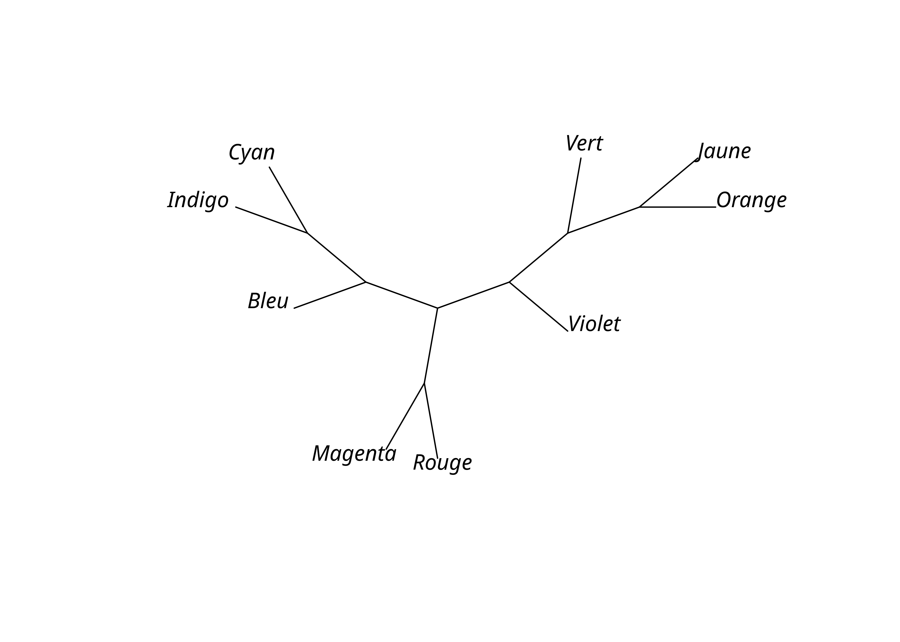
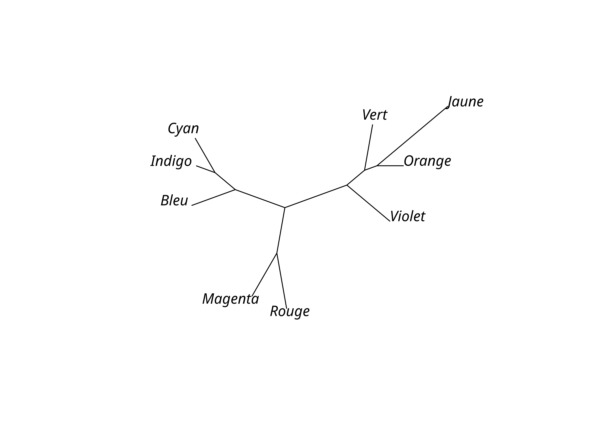

3 Méthodes de parcimonie
Contrairement aux méthodes par distance, les méthodes de parcimonie ne construisent pas un arbre pas à pas mais recherchent le ou les arbre optimaux parmi l’ensemble des arbres possibles. Le critère d’évaluation des arbres est celui de maximum de parcimonie: l’arbre préféré est celui qui suppose le moins de changements. Autrement dit, on suppose qu’un changement partagé s’est a priori produit dans l’ancêtre commun plutôt que de manière indépendante dans des langues différentes. Les méthodes de parcimonie cherchent donc à minimiser les homoplasies ou innovations parallèles.
Les méthodes de parcimonie sont plus complexes que celles par distance, mais elles restent néanmoins beaucoup plus simples que les méthodes probabilistes. Si elles reposent sur peu de suppositions et ont une solide base épistémologique, ces méthodes posent des problèmes statistiques et peuvent donner des résultats faux dans certaines conditions.
3.1 Parcimonie générale
Commençons par importer de nouveau la matrice de traits à états multiples que nous avions sauvegardée précédemment.
Parmi les différentes variantes de parcimonie, la plus simple (dite «de Wagner») autorise tous les changements sans restriction et les traite à égalité sans pondération, orientation, ou ordre. Dans le cas d’une matrice de traits binaires, les changements 0 > 1 et 1 > 0 sont ainsi traités de manière identique, et il n’est pas nécessaire de connaitre l’état ancestral de chaque trait et si un changement constitue une innovation ou une réversion, ce qui implique que le résultat est un arbre non enraciné.
Inclure les autres types de parcimonie.
La comparaison des arbres possibles à la recherche du plus parcimonieux est une procédure longue, et avec beaucoup de taxons, il est nécessaire d’utiliser une méthode heuristique comme le Parsimony Ratchet avec pratchet(). Le résultat est un objet multiPhylo pouvant contenir plusieurs arbres si l’on a précisé l’option all = TRUE, bien qu’ici il n’y en ait qu’un seul.
Vérifier le traitement des données manquantes et celui des polymorphismes pour les données à états multiples.
lx_mp <- pratchet(lx_phy, trace = 0, minit = 1000, k = 100, method = "sankoff", all = TRUE)
lx_mp
Phylogenetic tree with 9 tips and 7 internal nodes.
Tip labels:
Bleu, Magenta, Rouge, Jaune, Orange, Vert, ...
Node labels:
1, 0.695, 0.987, 0.992, 1, 0.782, ...
Unrooted; no branch lengths.plot(lx_mp, "unrooted")
L’option trace permet de choisir la quantité d’information à afficher concernant la recherche de l’arbre.
L’option method = "sankoff" permet d’utiliser l’algorithme de Sankoff qui est plus complexe mais plus général également.
Il est nécessaire de calculer explicitement la longueur des différentes branches. La fonction acctran() permet de calculer la longueur par la méthode de transformation accélérée qui assigne les changements le plus haut possible dans l’arbre et favorise l’interprétation des homoplasies comme des réversions.
lx_mp_bl <- acctran(lx_mp, lx_phy)
lx_mp_bl
Phylogenetic tree with 9 tips and 7 internal nodes.
Tip labels:
Bleu, Magenta, Rouge, Jaune, Orange, Vert, ...
Node labels:
1, 0.695, 0.987, 0.992, 1, 0.782, ...
Unrooted; includes branch lengths.plot(lx_mp_bl, "unrooted")
On peut ensuite enraciner l’arbre, par exemple avec midpoint(), qui place la racine à mi-chemin des deux taxons les plus divergents. Cette méthode présuppose cependant que l’évolution a lieu a taux constant et que la topologie est équilibrée (les taxons sont bien distribués entre les différents clades).
Une autre méthode nécessite de déterminer un extra-groupe ou groupe externe (outgroup). La fonction root() permet de procéder à l’enracinement en indiquant le numéro ou le nom du taxon constituant le groupe externe, par exemple «Violet». Cela présuppose bien sûr qu’il ait été inclus dans l’analyse de départ.
On peut alors sauvegarder les résultats (arbres avec longueurs de branches) dans un fichier au format Newick. Sauvegardons le résultat également comme un objet R, afin de conserver des propriétés intéressantes pour plus tard.
write.tree(lx_mp_r, "lx_mp.tree")
write_rds(lx_mp_r, "lx_mp.rds")3.2 Mesures d’homoplasie et de cohérence
Il est possible de calculer l’indice de cohérence (consistency index, ci) d’un caractère avec un arbre. Un caractère est cohérent avec un arbre si cet arbre implique que le caractère a évolué avec le minimum de transformations possibles pour rendre compte de ces états. Ce minimum m est l’amplitude du caractère, et pour un caractère avec k états possible, il est égal à \(k - 1\). L’indice de cohérence se calcule comme le rapport de l’amplitude m sur le nombre de pas (transformations) s observé pour ce caractère.
\(ci = \frac{m}{s}\)
La fonction CI() avec l’option sitewise permet d’obtenir l’index de cohérence de chaque caractère d’une matrice phylogénétique. On obtient une valeur NaN quand il y a une division par 0, dans les cas de caractères sans transformation qui présentent le même état dans tous les taxons.
ci <- CI(lx_mp_r, lx_phy, sitewise = TRUE)
ci [1] 1.0000000 NaN 1.0000000 0.6666667 NaN NaN NaN
[8] NaN NaN NaN 1.0000000 0.7500000 NaN 1.0000000
[15] 1.0000000 1.0000000 NaN NaN NaN NaN 1.0000000
[22] NaN NaN NaN NaN NaN NaN NaN
[29] NaN NaN NaN NaN NaN 0.5000000 1.0000000
[36] 1.0000000 NaN NaN NaN NaN NaN NaN
[43] NaN NaN 1.0000000 NaN 1.0000000 NaN NaN
[50] NaN 1.0000000 NaN NaN NaN 0.3333333 0.5000000
[57] NaN 1.0000000 NaN 1.0000000 1.0000000 1.0000000 1.0000000
[64] NaN 1.0000000 1.0000000 NaN 0.5000000 1.0000000 NaN
[71] 1.0000000 0.5000000 NaN NaN NaN 0.7500000 NaN
[78] NaN 1.0000000 NaN NaN NaN 1.0000000 1.0000000
[85] 0.6000000 1.0000000 NaN NaN NaN NaN NaN
[92] 0.7500000 NaN NaN NaN 1.0000000 NaN 0.5000000
[99] NaN NaN NaN 1.0000000 NaN NaN NaN
[106] NaN NaN NaN NaN 1.0000000Le nombre d’homoplasies h pour un caractère s’obtient par \(h = l - r\). La valeur de r se calcule avec une fonction cachée de phangorn, et celle de l avec la fonction sankoff() et l’option site = "site". En raison de la manière dont sont traités en interne les caractères de la matrice phylogénétique, il faut jouer avec les index de l’objet PhyDat pour bien récupérer la liste complète des valeurs.
m <- phangorn:::lowerBound(lx_phy)[attr(lx_phy, "index")]
s <- sankoff(lx_mp_r, lx_phy, site = "site")[attr(lx_phy, "index")]
h <- s - m
h [1] 0 0 0 1 0 0 0 0 0 0 0 1 0 0 0 0 0 0 0 0 0 0 0 0 0 0 0 0 0 0 0 0 0 1 0 0 0
[38] 0 0 0 0 0 0 0 0 0 0 0 0 0 0 0 0 0 2 1 0 0 0 0 0 0 0 0 0 0 0 1 0 0 0 1 0 0
[75] 0 1 0 0 0 0 0 0 0 0 2 0 0 0 0 0 0 1 0 0 0 0 0 2 0 0 0 0 0 0 0 0 0 0 0 0H <- sum(h)
H[1] 14On peut alors obtenir le numéro des caractères présentant de l’homoplasie:
which(h > 0) [1] 4 12 34 55 56 68 72 76 85 92 98L’indice de cohérence CI de l’ensemble des caractères est lui le rapport de la somme M des m sur la somme S des s de tous les N caractères.
\[CI = \frac{M}{S}, M = \sum^N_{i=1} m_i, S = \sum^N_{i=1} s_i\]
S est le nombre total de pas ou longueur de l’arbre. On peut l’obtenir avec la fonction sankoff() sans option.
Cet indice de cohérence est une mesure du degré d’homoplasie des données sur un arbre. Plus le score est bas, plus l’arbre contient d’homoplasie, et une valeur de 1 indique une absence totale d’homoplasie. Les caractères autapomorphiques ont un ci de 1.
L’indice de cohérence est cependant problématique car sa valeur minimale n’est en fait pas 0, ce qui ne permet donc pas de l’utiliser pour évaluer correctement le degré d’homoplasie.
Il est possible d’utiliser à la place un indice de cohérence mis à l’échelle (rescaled consistency index, rci) par l’introduction de g, le nombre maximal de transformations pour un caractère, ce qui correspond cas où toutes les transformations auraient lieu sur les branches terminales:
\[rci = \frac{g-s}{g-m}\frac{m}{s} = \frac{g-s}{g-m}ci\]
Les valeurs de g s’obtient avec une autre fonction cachée de phangorn.
g <- phangorn:::upperBound(lx_phy)[attr(lx_phy, "index")]
g [1] 6 0 1 3 0 0 0 0 0 0 1 5 0 6 1 4 0 0 0 0 3 0 0 0 0 0 0 0 0 0 0 0 0 3 4 1 0
[38] 0 0 0 0 0 0 0 2 0 6 0 0 0 1 0 0 0 4 2 0 4 0 5 6 4 1 0 4 1 0 2 1 0 4 4 0 0
[75] 0 5 0 0 3 0 0 0 7 4 6 5 0 0 0 0 0 6 0 0 0 2 0 4 0 0 0 1 0 0 0 0 0 0 0 3Mais il est plus simple de calculer la partie gauche de la formule du rci avec la fonction RI().
[1] 1.0000000 NaN NaN 0.0000000 NaN NaN NaN
[8] NaN NaN NaN NaN 0.3750000 NaN 1.0000000
[15] NaN 1.0000000 NaN NaN NaN NaN NaN
[22] NaN NaN NaN NaN NaN NaN NaN
[29] NaN NaN NaN NaN NaN 0.2500000 1.0000000
[36] NaN NaN NaN NaN NaN NaN NaN
[43] NaN NaN 1.0000000 NaN 1.0000000 NaN NaN
[50] NaN NaN NaN NaN NaN 0.1111111 0.0000000
[57] NaN 1.0000000 NaN 1.0000000 1.0000000 1.0000000 NaN
[64] NaN 1.0000000 NaN NaN 0.0000000 NaN NaN
[71] 1.0000000 0.3333333 NaN NaN NaN 0.3750000 NaN
[78] NaN 1.0000000 NaN NaN NaN 1.0000000 1.0000000
[85] 0.2000000 1.0000000 NaN NaN NaN NaN NaN
[92] 0.5000000 NaN NaN NaN NaN NaN 0.0000000
[99] NaN NaN NaN NaN NaN NaN NaN
[106] NaN NaN NaN NaN NaNL’indice de cohérence mis à l’échelle RCI pour l’ensemble des caractères se calcule comme suit:
\[RCI = \frac{G-S}{G-M}\frac{M}{S}, G = \sum^N_{i=1} g_i\]
Le coefficient de distortion d d’un caractère est le nombre d’homoplasies observées par rapport au nombre maximal possible.
\[d = \frac{h}{g - m}\]
d <- h/(g - m)
d [1] 0.0000000 NaN NaN 1.0000000 NaN NaN NaN
[8] NaN NaN NaN NaN 0.5000000 NaN 0.0000000
[15] NaN 0.0000000 NaN NaN NaN NaN NaN
[22] NaN NaN NaN NaN NaN NaN NaN
[29] NaN NaN NaN NaN NaN 0.5000000 0.0000000
[36] NaN NaN NaN NaN NaN NaN NaN
[43] NaN NaN 0.0000000 NaN 0.0000000 NaN NaN
[50] NaN NaN NaN NaN NaN 0.6666667 1.0000000
[57] NaN 0.0000000 NaN 0.0000000 0.0000000 0.0000000 NaN
[64] NaN 0.0000000 NaN NaN 1.0000000 NaN NaN
[71] 0.0000000 0.3333333 NaN NaN NaN 0.5000000 NaN
[78] NaN 0.0000000 NaN NaN NaN 0.0000000 0.0000000
[85] 0.6666667 0.0000000 NaN NaN NaN NaN NaN
[92] 0.3333333 NaN NaN NaN NaN NaN 1.0000000
[99] NaN NaN NaN NaN NaN NaN NaN
[106] NaN NaN NaN NaN NaNOn peut aussi le calculer pour un ensemble de caractères.
La partie gauche des formules d’indice de cohérence est lui-même une mesure appelée indice de rétention (retention index, ri, RI). Il s’agit du complément \(1 - D\) de l’indice de distorsion D. Il mesure la proportion d’homoplasies possibles mais non observées, ce qui revient à la proportion de synapomorphies possibles effectivement retenues comme telle sur un arbre. Les caractères autapomorphiques ont un ri de 0.
ri <- RI(lx_mp_r, lx_phy, sitewise = TRUE)
ri [1] 1.0000000 NaN NaN 0.0000000 NaN NaN NaN
[8] NaN NaN NaN NaN 0.5000000 NaN 1.0000000
[15] NaN 1.0000000 NaN NaN NaN NaN NaN
[22] NaN NaN NaN NaN NaN NaN NaN
[29] NaN NaN NaN NaN NaN 0.5000000 1.0000000
[36] NaN NaN NaN NaN NaN NaN NaN
[43] NaN NaN 1.0000000 NaN 1.0000000 NaN NaN
[50] NaN NaN NaN NaN NaN 0.3333333 0.0000000
[57] NaN 1.0000000 NaN 1.0000000 1.0000000 1.0000000 NaN
[64] NaN 1.0000000 NaN NaN 0.0000000 NaN NaN
[71] 1.0000000 0.6666667 NaN NaN NaN 0.5000000 NaN
[78] NaN 1.0000000 NaN NaN NaN 1.0000000 1.0000000
[85] 0.3333333 1.0000000 NaN NaN NaN NaN NaN
[92] 0.6666667 NaN NaN NaN NaN NaN 0.0000000
[99] NaN NaN NaN NaN NaN NaN NaN
[106] NaN NaN NaN NaN NaNRI <- RI(lx_mp_r, lx_phy)
RI[1] 0.71428571 - D[1] 0.7142857Il est ainsi possible de comparer les scores de différents arbres, par exemple celui obtenu par parcimonie et celui obtenu par UPGMA.
lx_upgma <- read.tree("lx_upgma.tree")
tr <- c(lx_mp_r, lx_upgma)
nms <- c("MP", "UPGMA")
comp_tb <- map(seq_along(tr), function(i){
m_x <- phangorn:::lowerBound(lx_phy)[attr(lx_phy, "index")]
s_x <- sankoff(tr[[i]], lx_phy, site = "site")[attr(lx_phy, "index")]
h_x <- s_x - m_x
CI_x <- CI(tr[[i]], lx_phy)
RI_x <- RI(tr[[i]], lx_phy)
df <- tribble(
~var, ~value,
"S", sum(s_x),
"H", sum(h_x),
"CI", CI_x,
"RCI", CI_x * RI_x,
"RI", RI_x,
"D", 1 - RI_x
)
colnames(df)[2] <- nms[i]
df
}) %>%
reduce(left_join)Les résultats sont similaires, mais, sans surprise, l’arbre obtenu par parcimonie contient moins d’homoplasies et a des meilleurs scores de CI, RCI et RI que celui obtenu par UPGMA.